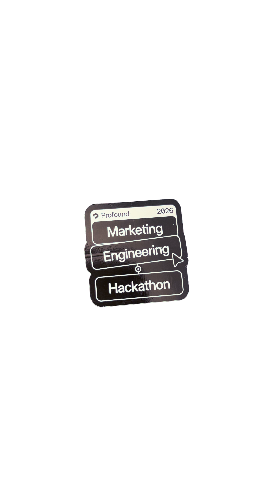

A standing report on how the world’s answer engines cover the AI-assistant category — and where Gemini lands in the story.
For each prompt, we start with the trailing 30 days of demand (mentions), then apply an ‘inclusion gap’ — a measure of how far Gemini sits below a competitive top-3 position, capped at 10 spots down. That gap is scaled to reflect how much visibility is actually being lost: a brand buried at position 13 loses more potential consideration than one sitting at position 4. From there, we apply two conversion assumptions: that 15% of users who’d see a better-ranked competitor would consider switching, and 3% of those would actually convert — multiplied by annual contract value per seat. This uses an assumed annual contract value of $240 per seat for Gemini — an estimate, not a disclosed or confirmed figure. The result is the annualized revenue exposure represented by one month of lost visibility — a directional estimate for prioritizing which gaps matter most, not a precise forecast.
Each is too small for a human to chase. Together, across every buried question, they are the cost of losing the verticals.
| # | Prompt | Avg. Position | At Risk |
|---|
The full competitive field, ranked by how much of the AI conversation each brand owns. Gemini’s position here is the baseline every section below is trying to explain.
Share of Voice — this brand’s slice of all category mentions, relative to competitors. Visibility — % of answers that mention this brand at all. Average Position — where in the answer it typically lands (lower is better; position 1 means named first).
| # | Brand | Share of Voice | Visibility | Avg. Position | Mentions |
|---|
Note: This table tracks AI assistant products specifically; parent companies (e.g. Google, OpenAI, Anthropic, Microsoft) are tracked separately and excluded here to keep the comparison apples-to-apples. Share of Voice reflects each product’s share of the full AI-assistant category as tracked by Profound — not a share limited to the products shown in this table — so the percentages here intentionally don’t sum to 100%.
The sources LLMs cite most when forming AI answers — which means these platforms are where editorial presence directly translates into answer-engine authority.
Drafted responses to the specific queries where Gemini is losing ground, each anchored to the sources and framing the engines already treat as credible.